|
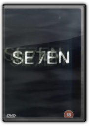
Seven - 2 Disc Set [1995]
David Fincher


The most viscerally frightening and disturbing homicidal maniac picture since The Silence of the Lambs, Sevenis based on an idea that's both gruesome and ingenious. A serial killer forces each of his victims to die by acting out one of the seven deadly sins. The murder scene is then artfully arranged into a grotesque tableau, a graphic illustration of each mortal vice. From the jittery opening credits to the horrifying (and seemingly inescapable) concluding twist, director David Fincher immerses us in a murky urban twilight where everything seems to be rotting, rusting, or moulding; the air is cold and heavy with dread. Morgan Freeman and Brad Pitt are the detectives who skillfully track down the killer—all the while unaware that he has been closing in on them, as well. Gwyneth Paltrow and Kevin Spacey are also featured, but it is director Fincher and the ominous, overwhelmingly oppressive atmosphere of doom that he creates that are the real stars of the film. It's a terrific date movie—for vampires. —Jim Emerson, Amazon.com
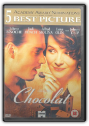
Chocolat [2001]
Lasse Hallström

Chocolatis an enchanting, moving and heart-warming tale of love and temptation, a big-budget movie with its roots in European art house cinema. Magical and almost fairytale-like in theme, it's the story of the mysterious Vianne and her arrival in a quiet, old-fashioned French town at the end of the 1950s. Gradually her attitude to life and the delicacies that she prepares in her chocolate shop have a marked effect on the local people, bound as they are by the twin forces of religion and politics.
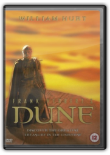
Frank Herbert's Dune—TV series [2000]
John Harrison
Frank Herbert's Duneis a three-part, four-and-a-half-hour television adaptation of the author's bestselling science fiction novel, telling a more complete version of the Dunesaga than David Lynch's 1984 cinema film. The novel is a massive political space-opera so filled with characters, cultures, intrigues and battles that even a production twice this length would have trouble fitting everything in. While television is good at setting a scene, it loses the novel's capacity to explain how the future works, and as with Lynch's film, Frank Herbert's Dunefocuses on Paul Atreides, the young noble betrayed who becomes a rebel leader—an archetypal story reworked everywhere from Star Wars(1977) to Gladiator(2000).
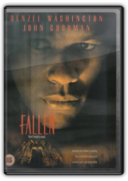
Fallen [1998]
Gregory Hoblit
Although it received mixed reactions from critics and audiences alike when released in 1998, this supernatural thriller benefits from a sustained atmosphere of anticipation and dread, and its combination of detective mystery and demonic mischief is handled with ample style and intelligence. Under the direction of Gregory Hoblit (who fared better with Primal Fear), Denzel Washington plays detective John Hobbes, who witnesses the gas-chamber execution of a serial killer (Elias Koteas). But when another series of murders begins, Hobbes suspects that the killer's evil spirit has survived and is possessing the bodies of others to do its evil bidding. Even Hobbes's trusted partner (John Goodman) thinks the detective is losing his grip on reality, but the dire warnings of a noted linguist (Embeth Davidtz) confirm Hobbes's far-out theory, and his case intensifies toward a fateful showdown.
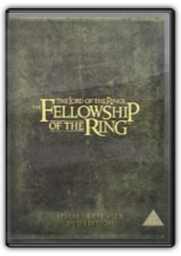
The Lord of the Rings: The Fellowship of the Ring (Extended Edition) [2001]
Peter Jackson
In every aspect, the extended edition of Peter Jackson's epic fantasy The Lord of the Rings: The Fellowship of the Ringis superior to the theatrical version. No-one who cares at all about the film should ever need to watch the original again. Well, maybe the impatient and the squeamish will still prefer it, because this extended edition makes a long film 30 minutes longer and there's a wee bit more violence. But the changes—sometimes whole scenes, sometimes merely a few seconds—make for a richer film. There's more of the spirit of JRR Tolkien, embodied in more songs and a longer opening focusing on Hobbiton. There's more character development, and more background into what is to come in the two subsequent films, such as Galadriel's gifts to the Fellowship and Aragorn's burden of lineage. Some additions make more sense to the plot while others are merely worth seeing, such as the wood elves leaving Middle-earth or the view of Caras Galadhon (but sorry, there's still no Tom Bombadil).
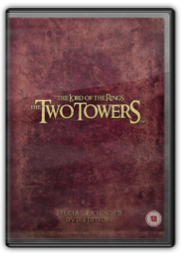
The Lord of the Rings: The Two Towers (Extended Edition) [2002]
Peter Jackson
With significant extra footage and a multitude of worthwhile bonus features this extended version of The Lord of the Rings: The Two Towersis as colossal an achievement as its predecessor, The Fellowship of the Ring. There are valuable additions to the story, including two new scenes which might appease those who feel that the characterisation of Faramir was the film's most egregious departure from the book; fans will also appreciate an appearance of the Huorns at Helm's Deep plus a nod to the absence of Tom Bombadil. Seeing a little more interplay between the gorgeous Eowyn and Aragorn is welcome, as is a grim introduction to Eomer and Theoden's son. And among the many other additions, there's an extended epilogue that might not have worked in cinemas, but is more effective here in setting up The Return of the King. While the 30 minutes added to The Fellowship of the Ringfelt just right in enriching the film, the extra footage in The Two Towersat times seems a bit extraneous—we seemoments that in the theatrical version we had been told about, and some fleshed-out conversations and incidents are rather minor. But director Peter Jackson's vision of JRR Tolkien's world is so marvellous that it's hard to complain about any extra time we can spend there.
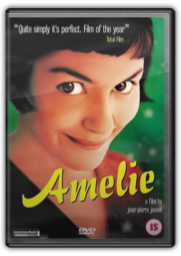
Amelie (Two Disc Special Edition) [DTS]
Jean-Pierre Jeunet
With its use of special effects to express the main character's internal emotions, Jean-Pierre Jeunet's Ameliecould have been mistaken for a French version of Ally McBeal; however, unlike Ally——"woe is me for I cannot find a man"—McBeal, Amelie is not distressed by the lack of men in her life, in fact the whole idea of sex seems to amuse her no end. Basic pleasures such as cracking the top of a Crème Brule offer her all the sensual satisfaction she needs and her existence in the "Paris of Dreams" is the stuff of fairy tales. Indeed, this cinematic treat must have worked wonders for the Paris tourist board: Jeunet's beautiful interpretation of Parisian life is depicted in all the vibrant colours you would expect from the director of Delicatessen.
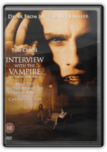
Interview With The Vampire (Buy 3 for £12*) [1995]
Neil Jordan
When it was announced that Tom Cruise would play the vampire Lestat in this adaptation of Anne Rice's bestselling novel, even Rice chimed in with a highly publicised objection. The author wisely and justifiably recanted her negative opinion when she saw Cruise's excellent performance, which perceptively addresses the pain and chronic melancholy that plagues anyone cursed with immortal bloodlust. Brad Pitt and Kirsten Dunst are equally good at maintaining the dark and brooding tone of Rice's novel. And in this rare mainstream project for a major studio, director Neil Jordan compensates for a lumbering plot by honouring the literate, Romantic qualities of Rice's screenplay. Considered a disappointment while being embraced by Rice's loyal followers, Interview with the Vampireis too slow to be a satisfying thriller, but it is definitely one of the most lavish, intelligent horror films ever made. —Jeff Shannon
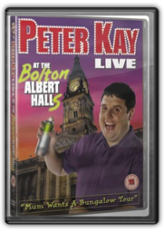
Peter Kay - Live At The Bolton Albert Halls [2003]
Peter Kay
Just a quick taxi ride from his mum's house, Peter Kay comes home to play Live at the Bolton Albert Halls. A packed and appreciative audience—sprinkled with Corrie stars for added glamour—relish the prodigal son's return. As his first stand-up show, Live at the Top of the Tower, demonstrated, Kay is a master of the mundane, finding hilarity in the previously unnoticed details of family life: here, Gran in her warden-protected flat, the funny way that dads run, and going to the supermarket with Mum are all mined for comic riches.
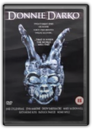
Donnie Darko [2002]
Richard Kelly (II)
Donnie Darkois a thought-provoking, touching and distinctive offering from relative newcomer, Richard Kelly (II). It's 1988 in small-town America and Donnie, a disturbed teenager on medication and undergoing psychoanalysis for his blackouts and personality disorders, is being visited by a being in a rabbit suit whom he calls Frank. It's this anti-Harvey that saves Donnie from being crushed to death when an airplane engine falls from the sky onto his house. This is the beginning of their escalating relationship which, as Donnie follows Frank's instructions, becomes increasingly violent and destructive. Added to this is Frank's warning of the impending apocalypse and Donnie's realisation that he can manipulate time, leading to a startling denouement where nearly everything becomes clear.
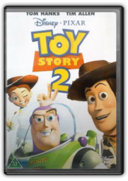
Toy Story 2 [2000]
John Lasseter
John Lasseter and his gang of high-tech creators at Pixar create another entertainment for the ages. Like the handful of other great movie sequels, Toy Story 2comments on why the first one was so wonderful while finding a fresh angle worthy of a new film. The craze of toy collecting becomes the focus here, as we find out Woody (voiced by Tom Hanks) is not only a beloved toy to Andy but also a rare doll from a popular 60s children's show. When a greedy collector takes Woody, Buzz Lightyear (Tim Allen) launches a rescue mission with Andy's other toys. To say more would be a crime because this is one of the most creative and smile-inducing films since, well, the first Toy Story. |
 Made with Delicious Library
Made with Delicious Library
Springfield, State zipflap congrotus delicious library Clancy, Liam